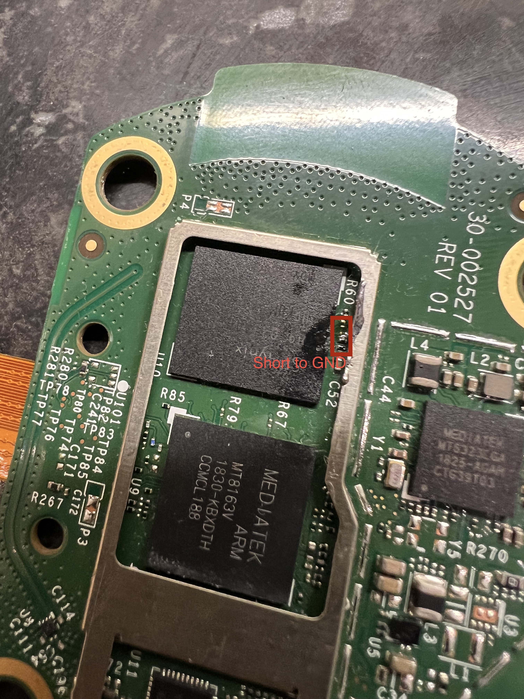

LibreEcho installation guide
For Amazon Echo 2nd generation (radar_puffin, MT8163). This procedure
involves opening the device, soldering, exposed electronics, and entering
MediaTek BROM mode.
Safety first
- Unplug the Echo before opening it. Never solder or probe a powered board.
- Use only a 3.3 V USB-to-TTL UART adapter. Never connect 5 V.
- For UART, connect GND and the adapter RX input only. Leave adapter TX and
VCC disconnected unless the release instructions say otherwise.
- Do not guess the BROM short point. A wrong short can permanently damage the
board. The UART and USB pads shown below are not the BROM short point.
- Keep exactly one program reading the UART during a boot attempt.
Equipment
- Linux computer and data-capable USB cable
- 3.3 V USB-to-TTL serial adapter, adjustable to 921600 baud
- Fine-tip temperature-controlled soldering iron
- Fine solder, flux, 30–34 AWG wire, Kapton tape
- Fine tweezers, plastic spudger, small screwdrivers
- Magnification and good lighting
- ESD mat/wrist strap or static-safe work surface
- Digital multimeter with continuity mode
- Optional: fine-point pogo pins and a stable pogo-pin jig
- Latest initial-install bundle and matching SHA-256 file
1. Download and verify the release
- Download the initial-install bundle from the latest
release.
- Confirm it supports your Echo model and board revision.
- Verify the checksum:
sh
sha256sum --check libreecho-*-SHA256SUMS
- Read the installation instructions included with the download.
Do not use an OTA archive, random boot.img, raw zImage, or an installer from
an old issue comment for a first install.
2. Open the Echo
- Disconnect power and USB.
- Photograph the enclosure, screws, and flex-cable routing.
- Remove the cover with a plastic tool.
- Release flex-cable latches before disconnecting cables; never pull on the
orange flex cable.
- Place the board on an insulating, static-safe surface.
- Check that the board matches the photographs and record its revision. Stop if
it does not.
3. Connect UART
UART lets you see the boot process and is strongly recommended for first install.
The current setup is receive-only.
UART location
The UART point is on the back of the LED-ring board, directly beneath C7.
The annotated photo shows the point. The USB pads in the other photo are on the
amplifier/tweeter board, not the LED-ring board.

Soldered wire
- With the board unpowered, apply a little flux to the UART point and an
approved ground point.
- Solder a 30–34 AWG wire to each point.
- Inspect under magnification for solder bridges.
- Secure the wires with Kapton tape so they cannot pull on the pads.
- Connect the UART-point wire to the adapter's RX input and ground to
adapter GND. Do not connect adapter TX or VCC.
If you are not comfortable soldering fine pads, use pogo pins or ask an
electronics technician to fit the wires.
Pogo pins
Use pogo pins for a reversible connection:
- Measure pad spacing and diameter.
- Make a jig that holds the pins perpendicular and cannot slide.
- Use separate pins for UART and GND; keep them away from power pads and nearby
components.
- Add a hard stop so the pins cannot damage the PCB.
- Test continuity with the board unpowered before connecting the adapter.
4. Start the UART reader
Use 921600 baud, 8N1. Find the adapter, then start the reader before rebooting
or entering BROM:
sh
ls /dev/ttyUSB* /dev/ttyACM* 2>/dev/null
stty -F /dev/ttyUSB0 921600 cs8 -cstopb -parenb -ixon -ixoff -crtscts raw -echo
cat /dev/ttyUSB0 | tee libreecho-uart.log
Replace /dev/ttyUSB0 with the actual device. If the output is blank or garbled,
check ground, adapter voltage, baud rate, and the pad location before continuing.
5. Enter BROM mode
Use the short point shown in the annotated photo below. Perform the procedure
with the board unpowered until the release installer tells you to connect power.

- Start the single UART capture.
- Disconnect power and USB, leaving the UART connected.
- Use an insulated probe or purpose-built pogo jig.
- Touch the marked short point to the marked ground point only.
- Connect power and USB as instructed by the installer.
- Wait for the MediaTek BROM device to appear.
- Remove the short immediately after it appears.
- Continue with the installer.
Never short the UART point, USB D+/D-, a capacitor, inductor, crystal,
battery contact, or another test pad. Never leave the short in place while
writing. If BROM does not appear, remove power before checking the probe and
board orientation.
6. Run the installer
Use the installation command supplied with the download:
- Confirm the checksum passed.
- Confirm the installer sees the Echo.
- Follow the on-screen instructions.
- Do not interrupt USB or power during installation.
- Follow the installer's reboot instructions.
If installation fails, save the error message and do not try a different image or
partition.
7. First boot
- Remove the shorting tool and secure loose wires.
- Reconnect flex cables and close the enclosure enough to prevent accidental
contact.
- Power on while watching UART.
- Confirm the expected LibreEcho kernel banner and control transport.
- Open the LibreEcho web control centre and complete setup.
- Change default credentials immediately.
- Test the features listed for your release.
If you need help, include the release version and the error message. Remove
serial numbers, MAC addresses, Wi-Fi passwords, tokens, and private logs.
Troubleshooting
UART is blank or unreadable
- Confirm adapter is 3.3 V and ground is connected.
- Confirm adapter RX is connected to the UART point beneath
C7.
- Confirm 921600 8N1.
- Close other serial programs.
- Capture raw output before filtering it.
BROM is not detected
- Remove power and the probe.
- Confirm the exact board revision and verified short point.
- Repeat the release-specified power/USB order.
- Try another USB cable/port without a hub.
- Do not use the UART or USB pads as the short point.
Installer reports a write failure
Stop and note the error message. Do not try a different partition or image. Ask
for help with the release version, board revision, and error message.
Appendix: USB pads
The annotated USB pads are on the amplifier/tweeter board. They are labelled
D+, D-, and GND:

These are USB differential/data pads, not UART or the BROM short point. Do not
connect them to a TTL UART adapter.